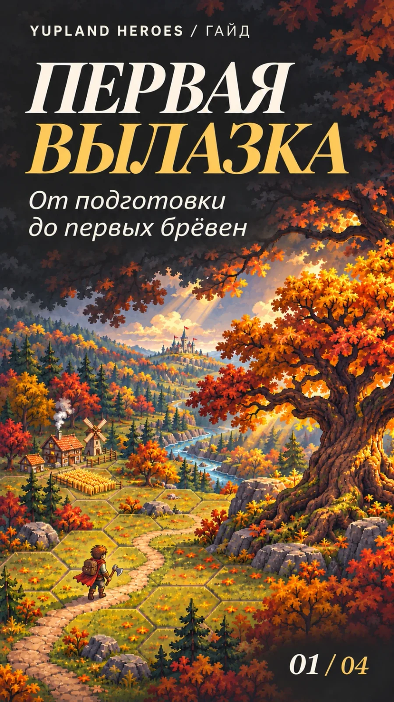
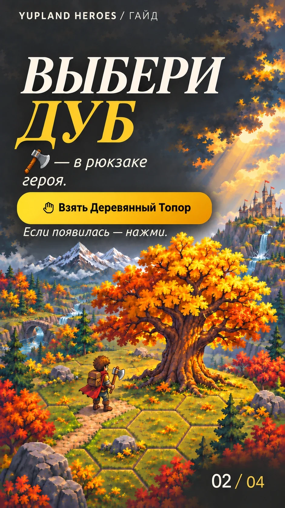
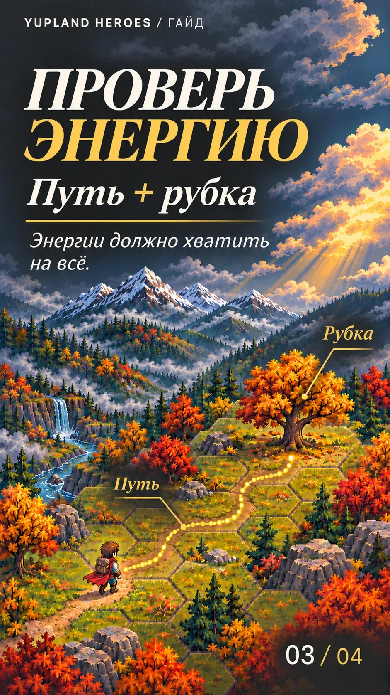
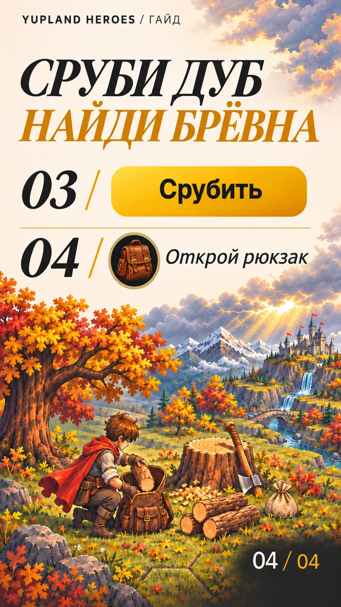

Первая вылазка
-
Обложка 
-
Шаг 01 · Пример из игры 
-
Шаг 02 
-
Шаги 03 и 04 
Сруби дуб и получи первые брёвна
Перед вылазкой положи деревянный топор в рюкзак героя и проверь, есть ли там место для брёвен.
Выбери дуб
Нажми на дуб на карте. Во время обучения используй отмеченное дерево.
Если появилась кнопка «Взять…», нажми её: герой возьмёт топор в руку.
Проверь энергию
Посмотри расход рядом со значком энергии. На маршруте эта сумма включает дорогу и рубку.
Сравни её со своим запасом. Если энергии меньше, выбери дуб ближе или дождись пополнения.
Кнопка может быть доступна, даже когда энергии хватает только на дорогу. Поэтому ориентируйся на сумму, а не только на кнопку.
Подтверди рубку
Подтверди действие «Срубить» у выбранного дуба. Герой подойдёт к нему и начнёт рубку. Дождись её завершения.
Найди брёвна
Открой рюкзак героя — там появятся брёвна дуба.
Не ищи их на нижней панели: полено там обозначает другой ресурс — «дерево» для построек.
Если рюкзак оказался полным, брёвна могут остаться мешочком на месте дуба. Освободи место и забери их.